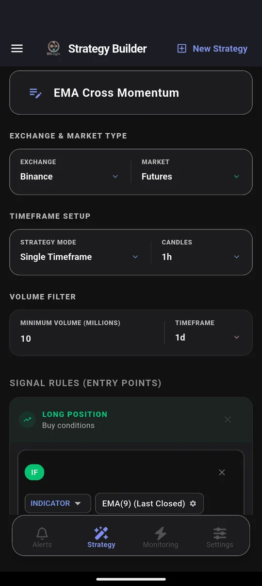
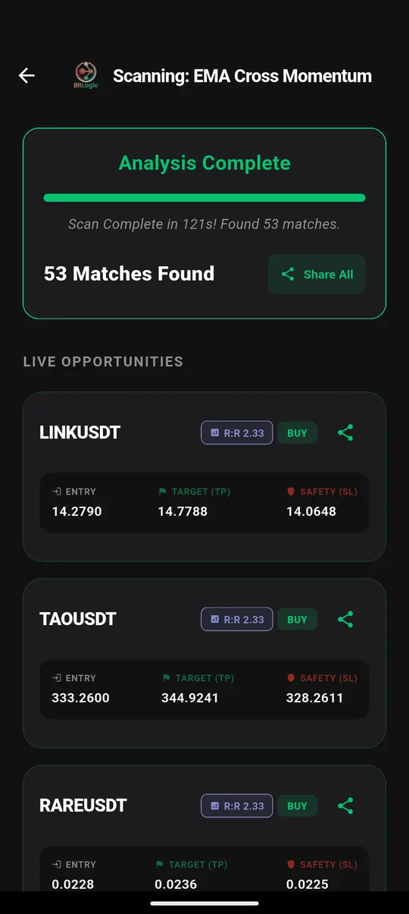

Binance Screener: How to Scan Spot and Futures for RSI and Volume Setups
Quick answer: Binance's app alerts react to price. They can't tell you which of Binance's hundreds of pairs just hit RSI 30, crossed a moving average or doubled their volume. A Binance screener can. BitLogic checked 400 Binance perpetuals against a trend rule in 121 seconds on 26 September 2026 and found 53 matches, each with an entry, target and stop.
BitLogic is a no-code crypto screener and alert app for Android and Windows, with a free web screener. It scans every pair on an exchange against rules you build and sends matches as push notifications, or as Telegram messages on Pro.
Features, availability and test results checked 26 September 2026.
First: Can You Use Binance Where You Live?
Binance is the world's largest exchange, but it is restricted in most of the markets we cover. Check this before anything else:
| Country | Binance status |
|---|---|
| Australia | Spot available through Binance Australia. Derivatives closed to Australian customers in April 2023 |
| United Kingdom | Not accepting new UK users since October 2023; crypto derivatives are banned for UK retail customers anyway |
| Germany / EU | Most services for EU residents suspended from 1 July 2026, after Binance didn't obtain a MiCA licence. Withdrawals remain open |
| United States | Not available. Binance.US is a separate company with its own markets |
| Canada | Not available since 2023 |
A technical note for US readers: Binance blocks its public market-data API for US IP addresses, so BitLogic can't load Binance data from the US. Screen Coinbase, Kraken or Bitstamp instead.
Sources: Binance Australia derivatives wind-down; CoinDesk on the EU suspension.
Why Screen Binance at All?
Even traders who don't hold an account there watch Binance. It is where most altcoin volume trades, so moves often show up on Binance first. For Australian traders it is also one of the most-used spot exchanges in the country.
What Binance's own tools lack is a way to ask a question of the whole exchange:
| Question | Binance price alert | BitLogic rule |
|---|---|---|
| "Tell me when BTC hits $X" | ✓ | ✓ |
| "Which pairs have RSI under 30 on the 1-hour?" | ✗ | ✓ |
| "Which pairs just crossed above their 200 EMA on high volume?" | ✗ | ✓ |
| "Alert me in Telegram" | ✗ | ✓ (Pro) |
How to Screen Binance in BitLogic
Step 1: Choose Binance, then Spot or Futures
Australian traders should pick Spot. Futures scans USDⓈ-M perpetuals. Add a volume filter: Binance lists hundreds of pairs, and this test used $10 million per day to keep only the liquid ones.

Step 2: Build or load a rule
Every condition must be true for a pair to match. The test rule stacks three moving averages and asks for above-average volume:

Step 3: Scan

Step 4: Turn it into an alert
Live Monitoring re-runs the same strategy in the background (every 1, 5, 15 or 30 minutes, every 1 or 4 hours, or once a day) and notifies you when a new pair matches, even with the app closed. You can monitor up to five strategies at once. On Pro, the same alerts also go to Telegram: tap Connect Telegram, press Start in the bot, and you are done.

Screen Binance free on Google Play, or on Windows.
The Test: 400 Binance Pairs, 26 September 2026
| Setting | Value |
|---|---|
| Market | Binance USDⓈ-M perpetuals, 1-hour candles |
| Rule | EMA 9 > EMA 21 > EMA 200, volume above its 20-candle average |
| Volume filter | $10M per day |
| Pairs checked | 400 |
| Time | 121 seconds |
| Matches | 53, including LINK and TAO |
53 of 400 is a 13% hit rate. On a strongly trending day, a trend rule catches a lot. If that's more than you want to read, tighten it: raise the volume filter or add an RSI band.
These are scan results, not recommendations. A match means a pair met the rule at that moment, nothing more.
Binance Rules for RSI, EMA and Volume Alerts
1. The classic RSI alert, across every pair
IF RSI(14) [1h, Last Closed] Is Less Than 30One condition, and it covers the whole exchange. It is the most-requested Binance alert, and Binance's app can't do it.
2. Oversold, but only in an uptrend
IF RSI(14) [1h, Last Closed] Is Less Than 35
AND Close [4h] Is Greater Than EMA(200) [4h]Plain oversold signals fire constantly in downtrends. The 4-hour trend filter removes most of them. Use Multi-Timeframe mode to mix 1-hour and 4-hour candles. The idea is the same as our RSI Reversal Bounce strategy.
3. Volume breakout
IF Close [1h, Last Closed] Crosses Above Bollinger Band upper (20, 2)
AND Volume [1h] Is Greater Than Volume SMA(20) × 2A close outside the band only counts when volume confirms it.
Want two different setups on one alert? Add a second Long rule. BitLogic checks each rule separately and alerts if any of them match.
Binance Timeframes in BitLogic
| Market | Timeframes |
|---|---|
| Binance Spot and Futures | 1m, 3m, 5m, 15m, 30m, 1h, 2h, 4h, 6h, 8h, 12h, 1d, 3d, 1w |
Binance offers the widest range of any exchange BitLogic supports, including 8-hour and 3-day candles.
Binance Liquidation Alerts
Binance is also the exchange behind BitLogic's liquidation feed, which tells you when large leveraged positions are force-closed. Pair it with funding rate alerts to see when longs or shorts have become crowded: how liquidation alerts work and how funding rate alerts work.
FAQ
Does Binance have a screener?
Binance has market lists and price alerts, but no screener that checks every pair against your own technical rule. BitLogic adds that by scanning up to 400 Binance spot pairs or perpetuals.
How do I set RSI alerts on Binance?
Build a rule in BitLogic such as RSI(14) below 30 on the 1-hour candle, select Binance, and turn on Live Monitoring. BitLogic re-checks every pair automatically and notifies you when one matches.
Can I get Binance alerts on Telegram?
Yes. BitLogic Pro sends every Live Monitoring match to Telegram. Connect with one tap and press Start in the bot.
Can Australians use Binance futures?
No. Binance Australia wound down its derivatives business in April 2023. Australians can trade Binance spot and screen Binance Spot in BitLogic.
Does BitLogic work with Binance in the US?
No. Binance blocks its public data API for US IP addresses, and Binance.com isn't available to US residents. US traders can screen Coinbase, Kraken or Bitstamp instead.
The Bottom Line
Binance has the most pairs and the most volume, which is exactly why you can't watch it by hand. A screener checks every pair against your rule, and Live Monitoring keeps checking while you do something else. Just make sure Binance is legally available to you first.
Download BitLogic free on Google Play and run your first Binance scan.
Nothing here is financial advice. Derivatives are leveraged and high-risk, and exchange availability changes, so check Binance's terms for your country.